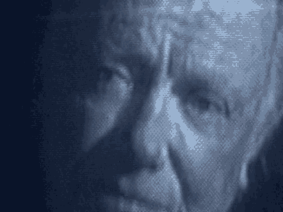

6 among the various items that were recovered during a search of
7 the home of Mohammed Sadik Odeh in Kenya on August 20, 1998.
8 2. That if recalled to the stand to testify Special
9 Agent Howard Ledbetter would testify that the items numbered
10 Odeh A-4 through Odeh F-4 are letters that were recovered
11 during a search of the home of Mohammed Sadik Odeh in Kenya,
12 on August 20, 1998.
13 It is further stipulated and agreed this stipulation
14 and the exhibits denoted herein may be received in evidence as
15 defendant's exhibits at trial.
16 And it is signed by the applicable parties, Judge.
17 THE COURT: Thank you.
18 MR. WILFORD: I'm not displaying Odeh C-3, your
19 Honor, the cover, and a portion of the interior.
20 I'll move on to D-3, your Honor, the cover of D3.
21 I'm now displaying the interior of D3.
22 I'm now going to move on to E-3. This is another
23 exercise book. This is the cover. I'm now displaying the
24 interior.
25 Moving on to F-3, your Honor, another exercise book,
4834
1 the cover, and I'm now displaying the interior. I am also
2 display the rear cover. It's difficult to see, your Honor.
3 I'm now displaying G-3, your Honor, another exercise
4 book, the cover and now the interior. I'm now displaying H-3,
5 another exercise book, the cover and now the interior
6 contents.
7 I'm now displaying I-3, which is different from
8 government 74 which is also a Crown exercise book, the
9 exterior cover, now the interior.
10 I'm now displaying J-3, your Honor. This is the
11 interior of J-3. I'm now displaying to the jury, your Honor,
12 K-3.
13 Your Honor, I have an item which is Odeh L-3 which
14 I'd like to publish to the jury.
15 THE COURT: Yes, you may.
16 MR. WILFORD: We're going to need gloves because of
17 the nature of the item. I have one more thing, so I'll do
18 that first.
19 THE COURT: Yes.
20 MR. WILFORD: Display Odeh N-3, another exercise
21 book. It's the outside cover and now the interior.
22 THE COURT: Mr. Wilford, won't it be adequate if you
23 stand right in front of the jury?
24 MR. WILFORD: I will. No problem, Judge.
25 THE COURT: The book you're going to hold is L-3.
4835
1 MR. WILFORD: The item is not a book, your Honor,
2 I'll hold it. I'd like to display M-3, your Honor.
3 THE COURT: Mr. Wilford is going to stand right in
4 front of the jury with gloves on and is displaying. You want
5 to describe what that is?
6 MR. WILFORD: Yes. The item is a box that's marked
7 and said it's made in Indonesia. There are other markings on
8 the box I cannot read but they appear to be in Arabic. The
9 box is open.
10 We do have a few more additional items.
11 MR. HERMAN: Judge, with the Court's permission the
12 defendant Odeh seeks to move into evidence exhibit number O-3
13 and the stipulation which pertains to it which we have marked
14 A-6.
15 MR. FITZGERALD: No objection.
16 THE COURT: Received.
17 (Defendant Odeh Exhibits O-3 and A-6 received in
18 evidence)
19 MR. HERMAN: Judge, the stipulation pertaining to O-3
20 which I would like to read at this time is marked Odeh A-6 and
21 with the Court's permission it reads as follows:
22 It is hereby stipulated and agreed by and between the
23 United States of America by Mary Jo White, United States
24 Attorney for the Southern District of New York, Patrick
25 Fitzgerald, Kenneth M. Karas, Paul W. Butler of counsel and
4836
1 defendant Mohammed Odeh by and with the consent of his
2 attorneys as follows:
3 1. That if called to the stand to testify a Special
4 Agent of the FBI would testify that the item numbered Odeh O-3
5 is a photograph of the Crown exercise notebook (Government
6 Exhibit 704) recovered during a search of the home of Mohammed
7 Sadik Odeh in Witu, Kenya on August 20, 1998 taken at the FBI
8 laboratory in Washington prior to the commencement of any
9 testing.
10 It is further stipulated and agreed this stipulation
11 and the exhibit denoted herein may be received in evidence as
12 defense exhibit Odeh O-3 at trial. Signed by the appropriate
13 parties.
14 MR. WILFORD: I'm going to display Odeh O-3 to the
15 jury.
16 MR. RICCO: Your Honor, in plain terms what this is,
17 it's a photograph of an item that is in evidence that was
18 taken before it was examined by the FBI.
19 THE COURT: Yes.
20 MR. WILFORD: Your Honor, we need to discuss
21 something with the government. May we stop now?
22 THE COURT: We'll break for lunch and we will resume
23 at 2 o'clock and promptly at 2 o'clock.
24 (Jury not present)
25
4837
1 THE COURT: Mr. Wilford, when do you anticipate,
2 assuming you start promptly at 2?
3 MR. RICCO: We'll be done at ten minutes after 2 if
1